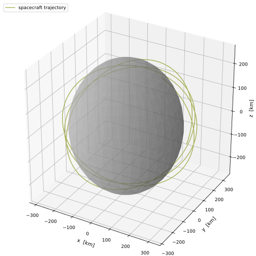
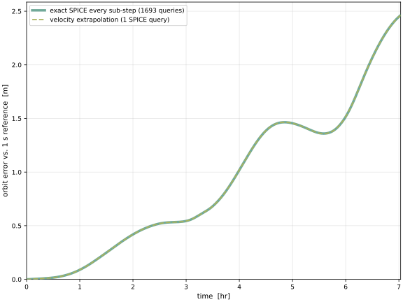

scenarioVestaOrientation
Overview
The companion to scenarioSpiceReconstruction, applying the SpiceInterface reconstruction feature (see Optimizing performance when using SPICE) to the orientation channel instead of position. It illustrates the “constant rotation vector” case from that documentation page: for a body that spins about a fixed axis at a constant rate, orientation reconstruction is cheap and exact.
A spacecraft orbits the asteroid (4) Vesta at 50 km altitude, deep in Vesta’s modeled degree-8
spherical-harmonic gravity field (VESTA20H.txt). Because NBodyGravity
rotates that aspherical field into the body-fixed frame using the source orientation J20002Pfix,
the attitude must be supplied continually as the orbit is integrated, and both dynamics paths call
C++ Module: spiceInterface to get it. On an MJScene dynamics task the attitude is queried
every RK4 sub-step; the classic C++ Module: spacecraft + C++ Module: gravityEffector path
queries once per task step and extrapolates within the step (the same distinction as in the
companion position scenario). Either way, a finely stepped
propagation evaluates sxform_c thousands of times per orbit.
But Vesta’s SPICE orientation IAU_VESTA is a constant rotation vector: a fixed spin axis and
a constant rate (its IAU model is a linear W = W0 + Wdot*t). SPICE returns the attitude as a
DCM, and a DCM trajectory is not linear in time, so linearly extrapolating the DCM entries would
not be exact. The reconstruction instead lifts the attitude to its principal rotation vector
(PRV) and extrapolates that: for a fixed axis at a constant rate the PRV is exactly linear in
time, so a first-order extrapolation from a single knot, mapped back to a DCM with PRV2C,
reproduces the attitude to machine precision for the whole run. One SPICE query serves the entire
propagation.
Important
This “one query is exact” simplification holds only while the body’s angular-velocity
vector is (near) constant, i.e. a fixed spin axis at a fixed rate. That covers nearly every
catalogued small body and the planetary IAU_* frames. It does not hold for a tumbler
(a non-principal-axis rotator such as (99942) Apophis), whose spin axis drifts: there the
attitude has genuine curvature and single-knot extrapolation degrades quickly. Such bodies
need proper reconstruction with interpolate=True and nKnots >= 2 (see the “choosing
knobs by body type” section of Optimizing performance when using SPICE).
The scenario runs a fine-step exact reference, then two coarse-step runs that differ only in how the attitude is supplied, and shows their errors against the reference are identical: the integrator step sets the error, not the SPICE query cost.
Run with:
python3 scenarioVestaOrientation.py
Illustration of Results
The first figure shows the spacecraft’s path around Vesta over three orbits, with Vesta drawn to scale at the origin. The orbit is low (50 km) and inclined, so it passes over a range of longitudes and is steered throughout by the aspherical, body-fixed gravity field. That is why the body’s attitude enters the dynamics at all, and it is the run whose final accuracy the second figure measures.
{kind=link}

The second figure shows the position error against time for two coarse-step runs, each differenced against the same integrator-converged fine-step reference: one queries the attitude exactly at every sub-step (thousands of SPICE calls), the other velocity-extrapolates from a single SPICE query for the whole run. The legend gives each run’s query count. The two error curves lie exactly on top of each other; because Vesta is a constant-rate spinner, the single-query attitude is exact, so the only error left is the integrator’s own truncation error, identical in both runs. The attitude’s SPICE cost, thousands of queries versus one, does not change the result.
Does it actually save wall-clock time? The scenario prints the runtime of each run. As in the
companion scenarioSpiceReconstruction, reconstruction changes only the SPICE cost, and here
that cost is a small share of the step: the degree-8 spherical-harmonic gravity evaluation dominates.
Collapsing the ~1700 attitude queries to one shaves at most a percent or two off the runtime on
either dynamics path (the classic C++ Module: spacecraft + C++ Module: gravityEffector, which queries
sxform_c once per step, and the MJScene dynamics task, which queries it once per
RK4 stage).
{kind=link}

- scenarioVestaOrientation.plotErrorOverTime(ts, errExact, nQExact, errOne, nQOne)[source]
Figure 2: both coarse runs have the SAME error vs. the reference.
The two curves overlap: the coarse-step error is set by the integrator, not by how (or how often) the attitude is queried from SPICE.
- scenarioVestaOrientation.plotTrajectory(pos, rEq)[source]
3D trajectory of the spacecraft around Vesta, with the body drawn to scale.
- scenarioVestaOrientation.run(show_plots=True)[source]
Run the constant-spinner orientation study and produce its figures.
- Parameters:
show_plots (bool) – display the figures.
- Returns:
figureListmapping figure name to matplotlib Figure.- Return type:
dict
- scenarioVestaOrientation.runOrbit(rN, vN, tf, dt, mu, rEq, kernels, knotStep=None)[source]
Propagate the Vesta orbit at RK4 step
dtand record the spacecraft trajectory.A SpiceInterface supplies only Vesta’s orientation: Vesta sits at the frame origin as the central body, so its position channel is disabled (identically zero, no SPK kernel needed). If
knotStep(nanoseconds) is given the orientation is reconstructed by single-knot velocity extrapolation on that grid (one SPICE query for the whole run); otherwise it is queried exactly at every integrator sub-step. Returns (orientation-query count, times [s], positions [m]).